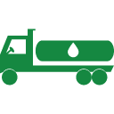
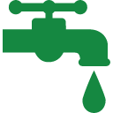
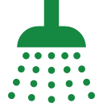
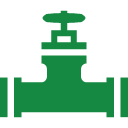
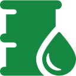

Nuotekų išsiurbimas ir išvežimas

Nuotekos siurbiamos iš:
- Kanalizacinių šulinių.
- Paplavų duobių.
- Lauko ir kilnojamųjų tualetų.
- Naftos produktais ir riebalais užterštų gaudyklių.
Kanalizacijos valymas

Kanalizacinių šulinių, paplavų duobių, lauko ir kilnojamųjų tualetų išplovimas:
- Išsiurbiamos nuotekos.
- Išplaunama aukštu slėgiu su mūsų atsivežtų švariu vandeniu.
- Praplovimo metu naudotas vanduo išsiurbiamas ir išvežamas.
Kanalizacinių sistemų valymas

Atliekamas valymo procesas:
- Užsikimšusios kanalizacijos sistemos valomos hidrodinaminiu būdu (nešvarumai šalinami aukšto slėgio vandens srovėmis).
- Hidrodinaminė mašina išplauna nešvarumus į šulinį.
- Hidrodinaminė - vakuuminė mašina išplauna nešvarumus į šulinį, surenka juos ir transportuoja į utilizavimą.
Valymo įrenginių aptarnavimas ir priežiūra

Teikiamos šios valymo įrenginių paslaugos:
- Septiko išsiurbimas, išplovimas ir išvežimas į utilizaciją.
- Perteklinio dumblo išsiurbimas ir išvežimas į utilizaciją.
- Aktyviojo dumblo pristatymas.
- Infiltracinių (drenažinių) šulinių ir vamzdžių valymas.
Naftos, smėlio bei riebalų gaudyklių aptarnavimas

Teikiame šias smėlio ir naftos gaudyklių priežiūros paslaugas:
- Dumblo sėsdintuvų ir separatorių ištuštinimas.
- Surinkto dumblo išvežimas į utilizaciją.
- Koalescencinių filtrų išvalymas.
- Sorbuojančių filtrų keitimas.